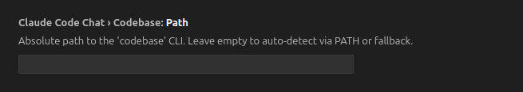
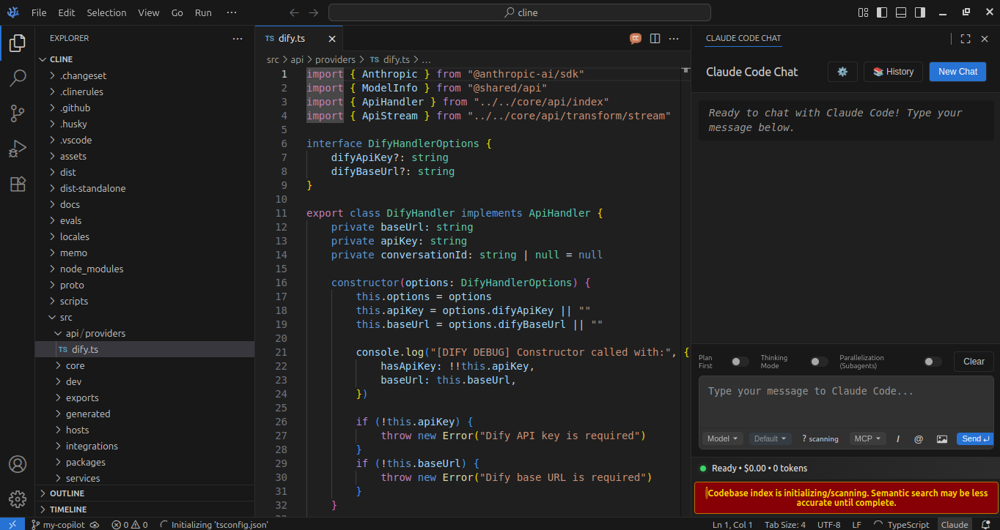
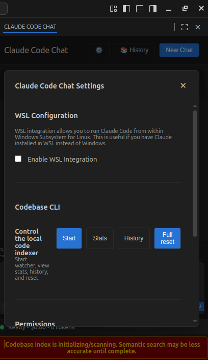

Claude Code Chat UI
A VS Code webview extension that brings a chat-like interface for Claude Code, enhanced with Codebase Index CLI integration.
About This Version
This is an enhanced version of the original Claude Code Chat by André Pimenta. This version adds seamless integration with Codebase Index CLI, providing real-time indexing status, controls, and enhanced workflow for AI-assisted development.
Repository: github.com/dudufcb1/claude-code-chat-ui
Original Project: github.com/andrepimenta/claude-code-chat by André Pimenta
Platform Compatibility
Tested on Linux, but should work on all operating systems supported by VS Code.
What Makes This Version Different
This enhanced version adds complete integration with the Codebase Index CLI ecosystem, providing:
Indexer Controls in UI
Direct control of the indexer from the webview interface:
- Start - Begin indexing current workspace
- Stats - View current indexing statistics
- History - Index git commit history retroactively
- Full Reset - Clear all indexed data and start fresh
All controls include: - Tooltips explaining each action - Disabled state logic based on current indexer status - Visual feedback during operations
Real-Time Status Badge
Live status monitoring with color-coded indicators:
- 🟢 watching - Index up-to-date, monitoring for changes
- 🟡 indexing - Currently processing files
- 🔴 error - Something went wrong
- ⚪ idle - Indexer not running
The extension reads .codebase/state.json periodically to reflect the current state and update the badge automatically.
Smart UX During Indexing
- Indexing warning prioritized over other notifications
- Clear visual feedback while indexer works
- Safe operation controls that prevent conflicts
CLI Configuration
New setting for codebase CLI path:
Allows customization of the CLI location based on your installation.
Session Safety
- Blocks "New Chat" while agents are processing
- Prevents session "poisoning" from overlapping operations
- Ensures clean state between conversations
Subagent Parallelization
Prepared infrastructure for parallel subagent execution:
- Toggle for next message processing
- Documented in UI and settings
- Ready for advanced multi-agent workflows
Clean Repository Hygiene
Automatically ignores indexer artifacts:
.codebase/- Indexer state and cache.env- Environment variablesagents_messaging.db- Agent communication database
Includes env.example for easy onboarding without exposing secrets.
Why This Integration Matters
End-to-End Control
Manage your entire semantic code indexing workflow from VS Code:
- Start indexer from the extension
- Monitor status in real-time
- Search your codebase semantically via Claude
- Index historical commits
- Reset and restart as needed
No need to switch to terminal or manage separate processes.
Real-Time Visibility
The status badge and warnings keep you informed:
- Know exactly when indexing is happening
- See how many files and blocks are indexed
- Get alerts if something goes wrong
- Understand indexer state at a glance
Safe Multi-Agent Workflows
The session safety features prevent common issues:
- No accidental parallel indexing operations
- Clean state between chat sessions
- Safe subagent parallelization when ready
Consistent Onboarding
env.exampleguides new users through configuration.gitignoreprevents accidentally committing sensitive data- Clear documentation of all features
Installation
Prerequisites
Before installing this extension, you need:
- VS Code or VS Codium
- Claude Code installed and configured
- Codebase Index CLI installed globally
See the Codebase Index CLI page for installation instructions.
Install the Extension
Option 1: From VSIX (Recommended)
- Download the latest
.vsixfrom Releases - In VS Code:
Extensions→...→Install from VSIX - Select the downloaded file
Option 2: Build from Source
git clone https://github.com/dudufcb1/claude-code-chat-ui.git
cd claude-code-chat-ui
npm install
npm run compile
Then install the extension from the claude-code-chat-ui folder in VS Code.
Configuration
Required Settings
Configure the extension in VS Code settings (settings.json):
{
// Path to your codebase CLI installation
"claudeCodeChat.codebase.path": "~/.local/bin/codebase",
// Claude API settings (from original extension)
"claudeCodeChat.apiKey": "your-claude-api-key",
"claudeCodeChat.model": "claude-sonnet-4",
// Optional: Custom prompt prepend
"claudeCodeChat.prependPrompt": "You are an expert developer assistant..."
}

Configure the path to your codebase CLI installation
Environment Variables
Create a .env file in your workspace (the extension will ignore it in git):
# Codebase Index CLI configuration
EMBED_PROVIDER=openai-compatible
EMBED_BASE_URL=https://api.example.com/v1
EMBED_API_KEY=your-api-key
EMBED_MODEL=text-embedding-3-small
# Qdrant configuration (if using)
QDRANT_URL=http://localhost:6333
QDRANT_API_KEY=optional
# Git tracking (optional)
TRACK_GIT=true
TRACK_GIT_LLM_PROVIDER=openai-compatible
TRACK_GIT_LLM_ENDPOINT=http://localhost:4141/v1
TRACK_GIT_LLM_MODEL=gpt-4.1
TRACK_GIT_LLM_API_KEY=your-key
Use env.example as a template (included in the extension).
Usage
Starting a Chat Session
- Open Command Palette (
Ctrl+Shift+P/Cmd+Shift+P) - Run
Claude Code Chat: Open Chat - The webview will open with indexer controls visible

Complete view showing the chat interface, indexer status badge, and warning banner
Using Indexer Controls
Access the indexer controls through the Settings panel (⚙️ icon):

Codebase CLI control panel with Start, Stats, History, and Full reset buttons
Start Indexing: 1. Click Start button in the UI 2. Wait for status badge to show 🟢 watching 3. Your codebase is now semantically indexed
View Stats: - Click Stats to see: - Total vectors indexed - Unique files tracked - Last update time - Collection name
Index History: - Click History to retroactively index git commits - Requires Qdrant and LLM configuration - Processes last N commits (configurable)
Full Reset: - Click Full Reset to clear all indexed data - Useful when changing embedding models - Recreates collection from scratch
Monitoring Status
The status badge shows real-time indexer state:
- State: Current indexer status
- Files: Number of unique files indexed
- Blocks: Total code chunks indexed
- Time: Last update timestamp
Chat with Context
Once indexed, chat with Claude normally. The semantic search integration happens automatically through Claude Code's context system.
Example queries: - "Explain the authentication flow" - "Find all API endpoints" - "Show me error handling patterns" - "Where is database configuration?"
Subagent Parallelization (Advanced)
Toggle parallel subagent execution for next message:
- Enable parallelization toggle in UI
- Next message will coordinate multiple agents
- Useful for complex refactoring tasks
Experimental
Subagent parallelization is prepared but experimental. Use with caution on production code.
Features from Original Extension
This version preserves all features from the original Claude Code Chat:
- Chat-like interface for Claude Code
- Conversation history with persistent storage
- Multiple models support (Claude Sonnet, Opus, etc.)
- Markdown rendering with syntax highlighting
- Code block actions (copy, insert, etc.)
- Conversation management (save, load, delete)
- Custom system prompts
- Token usage tracking
See the original documentation for details on these features.
How It Works with the Ecosystem
This extension completes the Codebase Index CLI ecosystem:
┌─────────────────────────────────────────────────────────────────┐
│ Complete Workflow │
└─────────────────────────────────────────────────────────────────┘
1. EXTENSION (Claude Code Chat UI)
├─ User opens chat in VS Code
├─ Controls indexer via UI buttons
├─ Monitors status in real-time
└─ Safe session management
2. INDEXER (Codebase Index CLI)
├─ Runs in background (triggered by extension)
├─ Watches workspace for changes
├─ Parses code with tree-sitter
├─ Creates embeddings
├─ Stores in Qdrant/SQLite
└─ Updates .codebase/state.json
3. SEARCH (Semantic Search MCP)
├─ Reads .codebase/state.json
├─ Queries indexed vectors
├─ Returns relevant code
└─ Powers Claude's context
4. AI ASSISTANT (Claude Code)
├─ Receives semantic context
├─ Understands your codebase
├─ Provides accurate answers
└─ Suggests relevant changes
The extension is the control center that ties everything together in VS Code.
Troubleshooting
Status Badge Shows "Not Initialized"
Cause: No .codebase/state.json file in workspace
Solution: 1. Click Start button in UI 2. Wait for indexing to begin 3. Badge should update to 🟡 indexing then 🟢 watching
Indexer Controls Disabled
Cause: Indexer is currently running an operation
Solution: - Wait for current operation to complete - Check status badge for current state - If stuck, close extension and restart VS Code
"New Chat" Button Disabled
Cause: Agents are currently processing
Solution: - Wait for current conversation to complete - This is a safety feature to prevent session conflicts - Status will clear automatically when agents finish
CLI Path Not Found
Cause: claudeCodeChat.codebase.path points to wrong location
Solution:
# Find your codebase CLI location
which codebase
# Update settings.json with correct path
{
"claudeCodeChat.codebase.path": "/correct/path/to/codebase"
}
Environment Variables Not Working
Cause: .env file not in workspace root or malformed
Solution:
1. Copy env.example to .env
2. Place in workspace root (same level as .vscode/)
3. Verify format (no quotes around values)
4. Restart extension
Configuration Examples
Minimal Setup (SQLite local)
{
"claudeCodeChat.codebase.path": "~/.local/bin/codesql",
"claudeCodeChat.apiKey": "your-claude-key",
"claudeCodeChat.model": "claude-sonnet-4"
}
.env:
EMBED_PROVIDER=openai-compatible
EMBED_BASE_URL=http://localhost:4141/v1
EMBED_API_KEY=your-key
EMBED_MODEL=text-embedding-3-small
Production Setup (Qdrant + Git Tracking)
{
"claudeCodeChat.codebase.path": "~/.local/bin/codebase",
"claudeCodeChat.apiKey": "your-claude-key",
"claudeCodeChat.model": "claude-sonnet-4.5"
}
.env:
# Embedder
EMBED_PROVIDER=openai-compatible
EMBED_BASE_URL=https://api.studio.nebius.com/v1/
EMBED_API_KEY=your-key
EMBED_MODEL=Qwen/Qwen3-Embedding-8B
# Qdrant
QDRANT_URL=http://localhost:6333
# Git tracking
TRACK_GIT=true
TRACK_GIT_LLM_PROVIDER=openai-compatible
TRACK_GIT_LLM_ENDPOINT=http://localhost:4141/v1
TRACK_GIT_LLM_MODEL=gpt-4.1
TRACK_GIT_LLM_API_KEY=your-key
Ecosystem Integration
This extension works seamlessly with:
Codebase Index CLI
The indexer that powers semantic search.
Learn more: Codebase Index CLI
Semantic Search MCP
MCP server for cross-IDE semantic search.
Learn more: Semantic Search MCP
Claude Code
The AI coding assistant that consumes the indexed context.
Official site: claude.ai/code
Credits
This enhanced version builds upon the excellent work of:
Original Extension: Claude Code Chat by André Pimenta
The original extension provides the foundation for the chat interface, conversation management, and Claude Code integration. This version adds the indexer integration layer on top.
Contributing
Contributions are welcome! This extension follows the same philosophy as the rest of the ecosystem:
- Bug reports - If something doesn't work as documented
- Documentation improvements - Clarifications, fixes
- Critical features - That benefit the majority of users
See the repository for contribution guidelines.
Related: Claude Hooks
Want to enhance your workflow even further? Check out the Claude Hooks guide to learn how to inject custom context and automate workflows with hooks.
License
MIT (same as original extension)